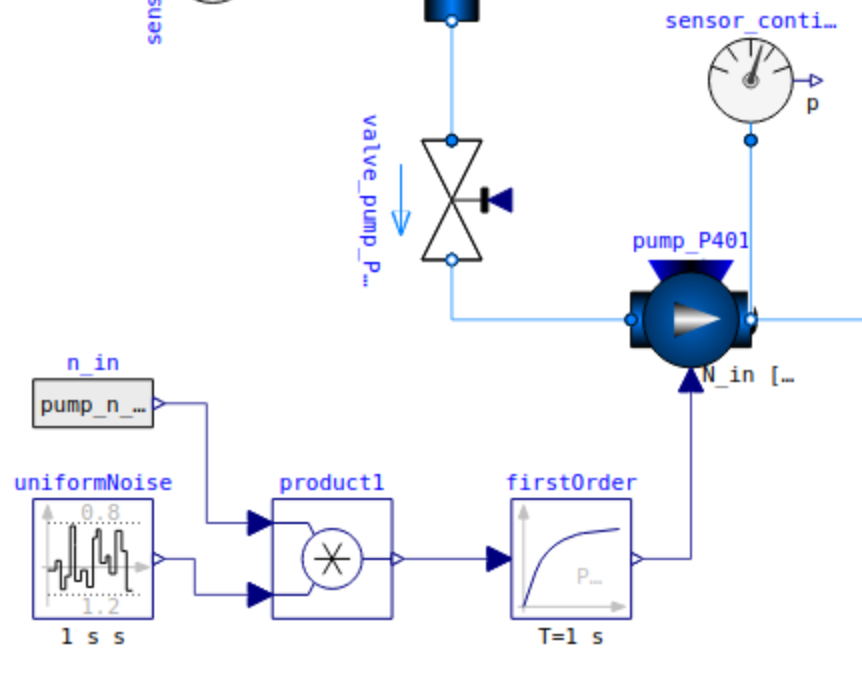

Anomalies and Diagnosis
The HAI-CPS benchmark defines eight different types of anomalies that can be induced into process plant configurations.
You can introduce a single anomaly or multiple anomalies simultaneously, even across different modules.
In the provided example setup, each single anomaly has been injected once after 2.500 seconds to offer a clear baseline.
However, users are encouraged to customize the anomaly configurations by modifying the benchmark_setup.json file.
Within this benchmark, anomalies are defined to correspond directly to specific fault or failure modes in the system. As such, the presence of an anomaly inherently constitutes the diagnosis. This contrasts with real-world diagnostic tasks, where root causes must often be inferred from observed system behavior. The dataset includes detailed descriptions of all diagnosis, each corresponding to specific anomaly scenarios.
Below is a list of all available anomalies:
Leaking Anomaly — anom_leaking
When the leaking anomaly anom_leaking is induced, a leaking valve opens between the inlet and outlet tanks.
The valve’s position depends on the module but is consistent across all modules.
This leak causes fluid to exit the process plant through a separate sink, which result in the following typical observable effects:
Reduced pressure in downstream pipes or tanks
Lower volume flow rates in the affected module or its neighbors
Decreasing tank levels despite normal or unchanged control signals
Imbalance between inflow and outflow rates, particularly where the leak is located
The leaking valve shown above opens when this anomaly is active.
⚠️ Warning:
When running simulations, make sure to remove the channels describing the leaking valve state.
Otherwise, this may confound your anomaly detection or diagnosis results.
Clogging Anomaly — anom_clogging
When the clogging anomaly anom_clogging is induced, a valve between the inlet and outlet tanks is partially closed to reduce volume flow.
This causes the following typical observable effects:
Increased pressure of the clogging valve
Decreasing flow rate may not be directly observable
The clogging valve shown above closes when this anomaly is active.
⚠️ Warning:
Ensure you remove any channels related to the clogging valve state during simulation.
Otherwise, your anomaly detection or diagnosis may be affected.
Filter Pollution Anomaly — anom_pollution
This anomaly is specific to the Filter module.
It sets the pollution coefficient of the filter valve to 50% from the beginning of the simulation.
This results in faster clogging and a higher pressure difference across the filter.
With anom_pollution active, the filter’s pollution coefficient is preset to 50%.
⚠️ Warning:
Remove any channels describing the filter’s pollution coefficient or valve state.
These can interfere with your detection or diagnosis models.
Pump Lower Performance (75%) — anom_pump75
This anomaly reduces the pump’s RPM to 75% of its normal operating value, leading to lower volume flow and slower tank filling times as well as lower pressure within the pipes.
The pump operates at 75% RPM when this anomaly is induced.
⚠️ Warning:
Remove channels describing the pump_n_in parameter to prevent interference with anomaly detection.
Pump Lower Performance (50%) — anom_pump50
Similar to anom_pump75, this anomaly reduces the pump’s RPM to 50% of normal performance, resulting in even slower flow, lower pressure and longer fill times.
The pump operates at 50% RPM when this anomaly is active.
⚠️ Warning:
Make sure to remove pump_n_in parameter channels to avoid misleading detection results.
Inlet Valve Anomaly — anom_valve_inX
This anomaly prevents inlet valve X (e.g. anom_valve_in0) from fully closing.
The valve remains 20% open at all times, allowing unintended fluid inflow even when not in the filling state.
Inlet valve X remains partially open (20%) when this anomaly is active.